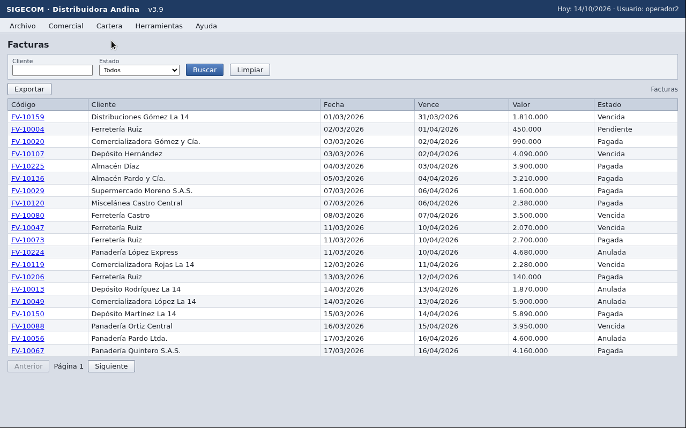

01
PIXELS ONLY
The desktop arrives as framebuffer pixels over VNC. No DOM, no REST, no login endpoint.
A natural-language task, a VNC desktop, five minutes. No API, no DOM, no vendor. The agent learns the app by using it, and replays what it learned. replay › perceive › ask.
Design doc: solution.html · Repo: github.com/jl-tavera/frontier
A distributor runs customers, orders and invoices in a system only its screen can reach. The evaluator sends a task in Spanish plus a desktop URL and password, and polls for the result.
The desktop arrives as framebuffer pixels over VNC. No DOM, no REST, no login endpoint.
Answer task_id in under 2 s, finish in 5 min, stop acting once terminada or fallida is reported.
Evaluation runs on another app, on a clean desktop. SIGECOM is only for development.
Something in the system moves mid-day. Whatever was memorised has to survive it.

CL-0121, FV-10047), a click under 100 ms is ignored, typing into a field concatenates.Raw RFB 3.8 over WebSocket, no browser: lossless frames, shared session, a dropped socket heals itself, key chords like ctrl+a arrive as one press.
OCR and classic CV on CPU run only when the pixels changed. A screen the map already knows is replayed from stored positions, byte for byte.
A model drives clicks only when there is nothing to replay, and what it did is stored as the procedure for next time. The first task learns; the second replays.
Text lines from RapidOCR, widget boxes from OpenCV, paired into fields, buttons, menus, grid cells. No GPU, no grounding model.
Line images are cached by hash; after a click only the region that changed is OCR'd. A known screen is served from its stored snapshot.
The model names an element; the tool resolves it: exact label, fuzzy ≥ 0.8, then the only element of that role in the grid cell. Never raw x,y.
The container sees 48 CPUs; uncapped, OCR spawned a thread per CPU. OMP_NUM_THREADS=4 in the image.
$ tail logs/t1.jsonl | jq -c '{event,tool,args,outcome,detail,cost_ms}' {"event":"step","tool":"click","args":["Facturas"],"outcome":"ok","detail":"hit","cost_ms":120} {"event":"step","tool":"click_text","args":["Buscar"],"outcome":"ok","detail":"moved","cost_ms":300} {"event":"step","tool":"fill_field","args":["Cliente","Ferretería Ruiz"],"outcome":"ok","detail":"repaired","cost_ms":650} ✓ hit: stored pixels matched, no OCR · moved: found by template · repaired: perceived once, map rewritten
observe: when the static crops match the frame byte for byte, the stored snapshot is used. Moved? Template match. Changed? Perceive, re-ground, rewrite.| memory/ | what is in it |
|---|---|
| SIGEcoM·Distribuidora Andina/ | the app, as OCR read its title; a 0.9 fuzzy match on the name means the misread still finds the map |
| V4.2/map.json | 6 screens, 5 confirmed menu edges, the denylist, what is still unexplored |
| V4.2/<screen>.png | a reference frame per screen |
| V4.2/<screen>/*.png | crops of each static element, compared byte for byte on replay |
| cache.sqlite | seeded in the container by the first lookup |
$ POST /tasks "¿Cuántas facturas vencidas tiene Ferretería Ruiz?" {"event":"sync.probe","scope":"changelog","entity":"facturas","outcome":"hit"} SELECT count(*) FROM rows WHERE entity='facturas' AND json_extract(data_json,'$.Cliente') LIKE 'Ferretería Ruiz%' AND json_extract(data_json,'$.Estado') = 'Vencida' {"event":"task.end","outcome":"terminada","args":{"summary":"respuesta: 45"}} ✓ two LLM calls on a mapped lookup: the parse and the summary
| rung | what | budget |
|---|---|---|
| 0 | Re-identify the epoch: new map directory inheriting every node as stale and every edge as a hint, re-run the pre-warm | ≤ 10 s + pre-warm |
| 1 | Re-ground in place: template match → fuzzy label → same role and cell → Jev at ≥ 0.8 → VLM on the marked image | ≤ 5 s |
| 2 | Re-explore this screen only, write the new edges | ≤ 30 s |
| 3 | Replan: one LLM call, another route or a free plan, rejoin when a known screen appears | ≤ 15 s |
| 4 | Rank down, never delete | 0 |
{signal, rung, via, confidence, before, after, cost_ms} to the log. The loop takes the step only after rung 3.warm map --visit, on the live desktop, and committed the V4.2 epoch into the image.SIGEcoM. The map is still found: the app name is matched fuzzily at 0.9, and a map can also be adopted by its menu bar.$ git log --oneline -1 4c853ea 4c853ea The SIGECOM V4.2 map learned on the live desktop ships with the service $ ls "memory/SIGEcoM·Distribuidora Andina/V4.2" acercade/ bienvenidckasigecom/ bienvenidoasigecom/ facturas/ pedidos/ pedidos-2/ map.json *.png $ jq '{nodes:(.nodes|length), edges:(.edges|length), procedures:(.procedures|length)}' map.json {"nodes": 6, "edges": 5, "procedures": 0}
| uv run -m harness mutate <kind> --fake | the log must contain |
|---|---|
| rename | drift signal=S1 rung=1 via=fuzzy |
| removed | drift S1 rung=1 · then rung=2 via=reexplore |
| landing_mismatch | drift signal=S3 rung=1 via=landing |
| menu_moved | drift rung=2 via=reexplore |
| unknown_screen | drift S4 rung=3 via=replan · rejoin S4 |
| persistent | drift S1 rung=4 via=rank_down |
| version_bump | drift S5 rung=0 via=inherit · 0 failed steps · 0 rank-downs |
| redesign / redesign_silent | drift S5 / S7 rung=0 via=inherit, then via=reidentify · rejoin · redesign also sync.schema_drift |
| shifted_cell · data_state | no drift line at all (negative controls) |
ExpectedLogLines, asserts the lines above in every task's JSONL. Exit code non-zero when one is missing.E1–E5 as received: create, update, count, export, a homonym that must fail.
Instantiated from the seeded cache, the expectation computed by SQL, same seed → same bytes. Every scoring condition has a template.
Read off the live screens by hand: oldest overdue invoice, two-value questions, relative dates, colloquial phrasing, dangerous requests, a secret probe.
$ uv run -m synth gen --per-template 2 --seed 1 && uv run -m synth check synth/tasks $ uv run -m synth eval --live --tasks synth/tasks --publish https://<service> evaluators StatusMatches · AnswerMatches · ReasonKeysNamed · NoSecret OracleCheck (/__check) · MaxDuration(300) · LogMetrics > per case expected vs got, first failed step or first drift line > per run success % per category, diffed against --baseline > report synth/reports/<run>.json → GET /evals on the service ✓ same JSON the organizers use, so /__check scores it as-is
{"ts":…,"event":"task.start","task_id":"t1","args":{"task":"¿Cuántas facturas tiene ACME?"}}
{"ts":…,"event":"plan","args":{"queries":[{"op":"read","entity":"facturas",…}],"confidence":0.93}}
{"ts":…,"event":"sync.probe","scope":"changelog","entity":"facturas","outcome":"miss"}
{"ts":…,"event":"step","tool":"click","args":["Facturas"],"screen_id":"facturas","outcome":"ok","detail":"hit","cost_ms":120}
{"ts":…,"event":"drift","signal":"S1","rung":1,"via":"fuzzy","confidence":0.91,"before":"Facturas","after":"Facturación","cost_ms":340}
{"ts":…,"event":"step","tool":"click","args":["Buscar"],"outcome":"ok","detail":"repaired","cost_ms":650}
{"ts":…,"event":"task.end","task_id":"t1","outcome":"terminada","args":{"summary":"respuesta: 12"}}task.start, plan, handoff, step, drift, rejoin, blocker, sync.probe, sync.acquire, sync.fallback, sync.schema_drift, task.end.railway logs shows the task as it runs.harness evidence <jsonl…> turns logs into the Challenge 2 table: each behaviour confirmed by a line, or marked assumed.LogMetrics reads the same file: steps, hit rate, fastpath mix, probe outcome, drift detected and recovered.python:3.12-slim + uv sync --frozen, uvicorn with one worker: task state and RFB sessions live in-process.GET /health. Restart on failure.TEAM_TOKEN, OPENROUTER_API_KEY and the three model ids. No model id is hard-coded.POST /tasks, never from the environment. The /evals page is served by the same deploy.$ curl -s https://<service>.up.railway.app/health {"status":"ok"} $ curl -s -X POST https://<service>.up.railway.app/tasks \ -H "Authorization: Bearer $TEAM_TOKEN" -H "Content-Type: application/json" \ -d '{"task":"¿Cuántas facturas vencidas hay?","desktop":{"url":"wss://…/websockify","password":"…"}}' {"task_id":"…"} $ curl -s https://<service>.up.railway.app/tasks/<task_id> -H "Authorization: Bearer $TEAM_TOKEN" {"status":"terminada","summary":"respuesta: …"}
| spec | package | ships |
|---|---|---|
| A · Service | app/main.py, runner, log | the three routes behind the Bearer, the 270 s guard with a summary reserve, one JSONL per task mirrored to stdout, the /evals page |
| B · RFB | app/rfb/ | RFB 3.8 over WSS, shared, lossless; reconnect, keep-alive, key chords, clipboard |
| C · Perception | app/perception/ | RapidOCR + OpenCV typed tree, incremental re-OCR, grounding, settle on the expected region |
| D · Memory | app/memory/ | map per epoch, fingerprint, pre-warm, signals S1–S7, rungs 0–4 |
| E · Sync | app/sync/ | SQLite cache, change-log probe, staging swap, column alignment, typed paging |
| W · Warm | app/warm/, memory/ | warm map --visit, warm seed, byte-equal replay and template re-find |
| F · Agent | app/agent/ | parse → schedule → replay + verify, one handoff to the 7-tool loop, procedures stored with placeholders |
| H · Harness | harness/ | mutate with 11 kinds and ExpectedLogLines; evidence table |
| S · Synth | synth/ | 16 templates, gen / check / eval, 79 explored tasks, 6 evaluators, baseline diff, /evals router |
Offline test suite, never the network: uv run --with pytest pytest -q. Full table with evidence and pending items: solution.html §12.
cache.sqlite is not committed: the first lookup after a deploy pages the grid live, then the cache answers.llm log event, so LLM calls per tier are not measured; no eval report is committed, so the first live run is the baseline.include, a live run with --publish.What we would build next, and what would make us: a Railway volume for maps and eval reports when a redeploy loses one that mattered · a CI job on synth eval --fake once the baseline is frozen · Postgres behind the cache at more than one instance.